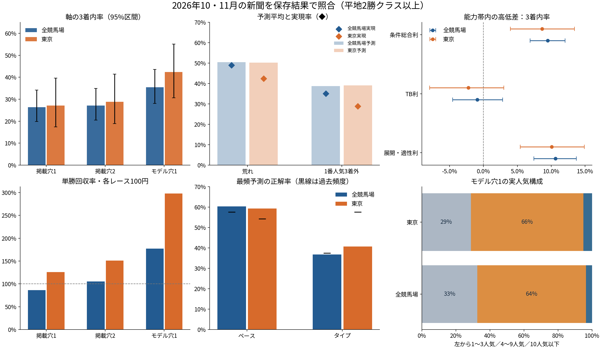
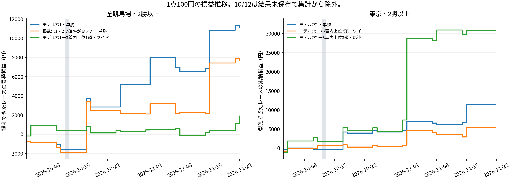

V7.1競馬新聞：10・11月の精度と馬券検証（11/22まで）
保存済みの新聞と確定結果だけを照合。主集計は平地2勝クラス以上144レース、東京59レース。参考を含む平地は387レース。新馬・障害、11/23の結果は評価対象外です。
2勝・3勝・OPが対象で、2歳OPも含みます。古馬G1だけの集計ではありません。
10/12は予想がありますが、結果・払戻が保存されていないため対象5レースを未評価としています。10・11月の新聞は過去再構成を含み、A/Bの方策選定には11/15までの結果が含まれます。この分析は2か月の事後探索です。月別再点検も独立したforward成績ではありません。
先に結論
- 掲載穴1・2の好走率はほぼ同じでした。2番手が常に上という根拠はありません。
- 買い目支持を加える前の「モデル穴1」は、掲載穴1より好成績でした。単勝回収率は全体177.0%、東京297.6%。
- 新聞をそのまま読む簡単な代案は、掲載穴1・2のうち予測3着内率が高い方。単勝は全体153.2%、東京277.1%。
- その軸から相手1頭のワイドは全体111.4%、相手2頭のワイドは東京155.7%。現在の紙面の数字だけで再現できます。
- 東京のモデル穴1→3着内確率上位2頭ワイドは157.6%。全体では相手1頭のワイドが113.1%。頭数を増やせば改善するわけではありません。
- 展開・適性利には能力帯内で上積みの関連が見られました。TB利の上積みは確認できず、タイプの最多予測も弱いままです。
順位と記号の定義
H1/H2/H3＝掲載穴1/2/3。F1＝掲載本命候補1。M1/M2＝モデル本来の厳密中穴候補1/2。相手の「3着内上位k頭」は軸を除いて選びます。
現在の紙面だけで簡単に再現するなら、掲載穴1・2から3着内予測が高い方を選ぶ案です。M1/M2は保存モデル本来の選定で、現行の推奨欄では独立表示されていません。将来は買い目支持順と分けて表示する対象です。
現在のHTMLは、まず近走の想定人気4位以下を穴側とし、A支持数 → B支持数 → 厳密中穴候補か → 穴軸指数の順で並べています。A/Bは買い目ルールの支持で、互いに独立した投票でも好走確率でもありません。
モデル穴1は、近走想定4〜min(9,頭数−1)位かつ中穴帯所属確率38%以上の中で穴軸指数最大の馬です。所属確率は近走75%・長期25%の合成。指数は市場想定以上の好走余地、不利展開時の余地と絶対的好走性、崩れリスクを合成した順位指標で、確率ではありません。このモデルの出力は既存のhole_stable_horse_idと一致することを確認しました。

全競馬場・2勝以上：144レース
穴2の3着内予測が穴1より高いケースは 50/144。穴軸指数自体も2位の方が高いケースは 35/144 でした。順位を勝率・3着内率の順位と読むことはできません。
軸の精度と単複回収率
| 選び方 | 順位 | 出走数 | 1着 | 3着内 | 勝率 | 3着内率 | 単勝回収率 | 複勝回収率 | 単勝中央値 | 実1〜3人気の割合 |
|---|---|---|---|---|---|---|---|---|---|---|
| 掲載本命候補 | 1 | 144 | 39 | 87 | 27.1% | 60.4% | 78.3% | 84.8% | 3.200 | 91.0% |
| 掲載穴軸 | 1 | 144 | 11 | 38 | 7.6% | 26.4% | 86.0% | 72.8% | 11.600 | 20.8% |
| 掲載穴軸 | 2 | 144 | 12 | 39 | 8.3% | 27.1% | 105.1% | 75.3% | 10.800 | 22.9% |
| 掲載穴軸 | 3 | 144 | 14 | 41 | 9.7% | 28.5% | 90.1% | 84.4% | 15.200 | 18.1% |
| V7.1勝率順 | 1 | 144 | 43 | 88 | 29.9% | 61.1% | 124.4% | 90.3% | 3.100 | 90.3% |
| V3勝率順 | 1 | 143 | 45 | 86 | 31.5% | 60.1% | 107.8% | 91.7% | 3.600 | 83.2% |
| 穴候補内・3着内率順 | 1 | 144 | 22 | 49 | 15.3% | 34.0% | 163.3% | 85.8% | 8.400 | 34.0% |
| 厳密中穴候補・指数順 | 1 | 144 | 22 | 51 | 15.3% | 35.4% | 177.0% | 91.7% | 8.750 | 32.6% |
出走取消は精度の分母から除外し、馬券では返還として扱います。複勝回収率は実払戻を使い、3着内率と区別します。
掲載穴1・2の同時好走
| R | 穴1・2どちらか3着内 | 両方3着内 | 本命＋穴1の両方3着内 | 本命＋穴2の両方3着内 | 本命＋穴どちらか | 本命・穴1・穴2すべて |
|---|---|---|---|---|---|---|
| 144 | 69 | 8 | 22 | 22 | 39 | 5 |
穴1だけ3着内は30回、穴2だけは31回。対応のある比較の検定p値は1.000で、この期間から穴2の好走率が上と断定できません。「どちらかを拾える」と「2頭が同時に来る」は別の現象です。
ペース・タイプ・荒れ・人気馬リスク
| 対象 | R | 正解 | 最頻予測正解率 | 過去頻度の正解率 | Brier | 過去頻度Brier | 想定展開3組の包含率 |
|---|---|---|---|---|---|---|---|
| ペースS/M/H | 144 | 87 | 60.4% | 57.6% | 0.539 | 0.573 | 58.3% |
| 瞬発/持続/消耗 | 144 | 53 | 36.8% | 37.5% | 0.674 | 0.659 | 58.3% |
| 対象 | R | 予測平均 | 実現率 | AUC | Brier | 過去頻度Brier |
|---|---|---|---|---|---|---|
| 荒れ | 144 | 50.4% | 49.0% | 0.554 | 0.252 | 0.248 |
| 1番人気3着外 | 144 | 38.7% | 35.1% | 0.601 | 0.220 | 0.220 |
| 実中穴が1頭以上3着内 | 144 | 84.1% | 84.7% | 0.497 | 0.129 | 0.131 |
Brierは小さい方が良く、AUCは0.5が無作為と同程度です。平均確率が合うことと、荒れるレースを選別できることを区別します。ペースの基準は学習時のコース別標準化指標、タイプは標準化した加速・持続・減速成分の最大値です。
展開・適性利とTB利の上積み
| 指標 | 高低それぞれの頭数 | 高い側の3着内率 | 低い側の3着内率 | 差 | 開催日再標本化95%下限 | 同上上限 |
|---|---|---|---|---|---|---|
| 展開・適性利 | 875 | 27.5% | 16.9% | 10.6% | 7.4% | 13.7% |
| TB利 | 875 | 21.6% | 22.5% | -0.9% | -4.6% | 2.8% |
| 条件総合利 | 875 | 26.7% | 17.3% | 9.5% | 6.9% | 12.0% |
同じレース内で統合能力順位を3帯に分け、各帯の指標上半分と下半分を比較しました。上昇度・距離・ローテ等も反映される指標であり、展開やTBの因果効果だけを分離した推定ではありません。内外の実走経路の正確さは、隊列文字列だけでは確定できません。
この2か月から残す購入候補
| 買い方 | 購入条件 | 購入R | 点数 | 的中点 | 購入率 | 点的中率 | 回収率 | 10月 | 11月 | 11/21・22 | 観測日次DD | 上位3払戻除外 | 30日黒字率 |
|---|---|---|---|---|---|---|---|---|---|---|---|---|---|
| 厳密中穴の指数1位・単勝 | 全対象 | 144 | 144 | 22 | 100.0% | 15.3% | 177.0% | 167.3% | 188.2% | 116.0% | 1,580円 | 95.5% | 100.0% |
| 掲載穴1・2のうち3着内予測が高い方・単勝 | 全対象 | 144 | 144 | 19 | 100.0% | 13.2% | 153.2% | 127.4% | 182.8% | 116.0% | 1,920円 | 77.6% | 100.0% |
| 厳密中穴の指数1位・単勝 | 軸の条件総合利がプラス | 96 | 96 | 13 | 66.7% | 13.5% | 162.2% | 198.2% | 123.0% | 138.8% | 1,700円 | 76.5% | 100.0% |
| 厳密中穴の指数1位→3着内確率上位1頭・ワイド | 全対象 | 144 | 144 | 29 | 100.0% | 20.1% | 113.1% | 105.7% | 121.6% | 200.0% | 1,070円 | 84.4% | 50.0% |
| 掲載穴1・2のうち3着内予測が高い方→3着内上位1頭・ワイド | 全対象 | 144 | 144 | 29 | 100.0% | 20.1% | 111.4% | 102.9% | 121.2% | 246.0% | 1,970円 | 82.7% | 8.3% |
| 本命1―穴2・ワイド | 穴2の予測3着内率が穴1より高い | 50 | 50 | 12 | 34.7% | 24.0% | 115.8% | 110.0% | 121.6% | 115.0% | 680円 | 72.8% | 75.0% |
| 本命1―穴2・ワイド | 荒れ度表示が高い | 31 | 31 | 8 | 21.5% | 25.8% | 169.7% | 129.4% | 212.7% | 615.0% | 900円 | 85.5% | 91.7% |
| 厳密中穴の指数1位→統合能力上位5頭・ワイド | 軸の条件総合利がプラス | 96 | 480 | 54 | 66.7% | 11.2% | 110.7% | 102.9% | 119.2% | 55.5% | 5,640円 | 89.9% | 100.0% |
| 厳密中穴の指数1位→3着内確率上位1頭・馬連 | 全対象 | 144 | 144 | 14 | 100.0% | 9.7% | 166.7% | 149.2% | 186.7% | 276.7% | 2,470円 | 95.9% | 100.0% |
1点100円。購入率の分母は評価できた対象レース全体。最大払戻除外は購入額を維持し払戻だけを除きます。観測日次DDは、その日の全払戻・返還を決済した累積損益の過去最高からの下落額です。10/12を除く観測経路のDDです。
A・Bをレース選択に使った探索案：強い事後選定の影響に注意
A/Bの馬を優先する代わりに、A/B買い目のあるレースだけモデル穴1を買う案です。高い集計値は、A/Bルールの選定に11/15までの結果が使われた影響を含みます。通常案とは分けてforwardで記録する候補です。
| 買い方 | 購入条件 | 購入R | 点数 | 的中点 | 購入率 | 点的中率 | 回収率 | 10月 | 11月 | 11/21・22 | 観測日次DD | 上位3払戻除外 | 30日黒字率 |
|---|---|---|---|---|---|---|---|---|---|---|---|---|---|
| 厳密中穴の指数1位・単勝 | A・B買い目があるレース | 82 | 82 | 21 | 56.9% | 25.6% | 303.2% | 280.0% | 332.8% | 138.8% | 580円 | 160.0% | 100.0% |
週単位の再標本化による振れ
| 候補 | 条件 | 回収率95%下限 | 同上上限 | 再標本化内の黒字割合 | 再標本化日次DD95%点 |
|---|---|---|---|---|---|
| 厳密中穴の指数1位・単勝 | 全対象 | 94.7% | 253.8% | 96.5% | 4,460円 |
| 掲載穴1・2のうち3着内予測が高い方・単勝 | 全対象 | 69.9% | 237.9% | 89.0% | 4,780円 |
| 厳密中穴の指数1位・単勝 | 軸の条件総合利がプラス | 60.6% | 280.9% | 85.8% | 4,580円 |
| 厳密中穴の指数1位→3着内確率上位1頭・ワイド | 全対象 | 87.6% | 141.8% | 83.1% | 2,310円 |
| 掲載穴1・2のうち3着内予測が高い方→3着内上位1頭・ワイド | 全対象 | 79.3% | 150.9% | 71.1% | 3,340円 |
| 本命1―穴2・ワイド | 穴2の予測3着内率が穴1より高い | 72.8% | 157.3% | 75.1% | 1,700円 |
| 本命1―穴2・ワイド | 荒れ度表示が高い | 29.5% | 359.0% | 79.7% | 2,570円 |
| 厳密中穴の指数1位→統合能力上位5頭・ワイド | 軸の条件総合利がプラス | 70.4% | 148.6% | 68.8% | 13,971円 |
| 厳密中穴の指数1位→3着内確率上位1頭・馬連 | 全対象 | 84.3% | 239.8% | 95.0% | 5,471円 |
8週の観測週を4,000回再標本化した条件付きの振れです。未知の将来の黒字確率ではなく、多数探索からの選定バイアスも補正しません。30日黒字割合は重複窓の参考値で、結果不明の10/12を含む窓を除外しています。90日は期間不足です。
従来の機械買い目・券種別
| 買い方 | 購入R | 点数 | 的中点 | 点的中率 | 回収率 | 観測日次DD | 上位3払戻除外 |
|---|---|---|---|---|---|---|---|
| AB重複除去・ワイド | 64 | 117 | 22 | 18.8% | 89.6% | 3,260円 | 60.8% |
| AB重複除去・複勝 | 31 | 31 | 11 | 35.5% | 110.3% | 1,020円 | 63.5% |
| AB重複除去・馬連 | 20 | 60 | 7 | 11.7% | 209.3% | 1,690円 | 44.2% |
掲載穴1とモデル穴1が異なった具体例
| 日付 | 場 | R | レース | 掲載穴1 | 着順 | A票 | B票 | モデル穴1 | 同着順 | 実人気 | 同馬単勝払戻 |
|---|---|---|---|---|---|---|---|---|---|---|---|
| 11/15 | 東京 | 10 | ユートピアS | ロンギングセリーヌ | 11 | 1 | 0 | ハニーコム | 1 | 10 | 5,240円 |
| 10/25 | 新潟 | 11 | ルミエールAD | フウセツ | 13 | 0 | 1 | モズナナスター | 1 | 8 | 2,120円 |
| 11/01 | 東京 | 10 | 秋嶺S | オカメノコイ | 11 | 1 | 0 | クインズデネブ | 1 | 7 | 1,730円 |
| 11/01 | 東京 | 11 | 天皇賞(秋) | リアライズシリウス | 15 | 1 | 1 | ダノンデサイル | 1 | 4 | 1,080円 |
| 10/04 | 東京 | 9 | tvk賞 | セルズパワー | 12 | 1 | 0 | ウフドゥウフ | 1 | 4 | 800円 |
| 10/24 | 東京 | 9 | 精進湖特別 | タナスーペルノーバ | 10 | 1 | 0 | レオアジャイル | 1 | 3 | 750円 |
| 10/25 | 京都 | 12 | 嵯峨野特別 | スーパージョック | 7 | 1 | 0 | アンビシャスヨシノ | 1 | 4 | 620円 |
| 11/08 | 福島 | 11 | みちのくS | アスクワンタイム | 14 | 1 | 0 | ギリーズボール | 1 | 2 | 560円 |
| 11/14 | 京都 | 12 | 3歳以上2勝クラス | ヴェナートル | 8 | 1 | 0 | ロンドボス | 1 | 2 | 410円 |
| 10/10 | 京都 | 10 | 宇治川特別 | テーオーシュタイン | 6 | 1 | 0 | エルハーベン | 1 | 2 | 340円 |
東京・2勝以上：59レース
穴2の3着内予測が穴1より高いケースは 23/59。穴軸指数自体も2位の方が高いケースは 18/59 でした。順位を勝率・3着内率の順位と読むことはできません。
軸の精度と単複回収率
| 選び方 | 順位 | 出走数 | 1着 | 3着内 | 勝率 | 3着内率 | 単勝回収率 | 複勝回収率 | 単勝中央値 | 実1〜3人気の割合 |
|---|---|---|---|---|---|---|---|---|---|---|
| 掲載本命候補 | 1 | 59 | 17 | 37 | 28.8% | 62.7% | 83.2% | 88.8% | 3.200 | 91.5% |
| 掲載穴軸 | 1 | 59 | 5 | 16 | 8.5% | 27.1% | 125.9% | 84.6% | 12.100 | 15.3% |
| 掲載穴軸 | 2 | 59 | 7 | 17 | 11.9% | 28.8% | 151.2% | 78.3% | 9.400 | 22.0% |
| 掲載穴軸 | 3 | 59 | 3 | 15 | 5.1% | 25.4% | 62.7% | 71.9% | 16.500 | 18.6% |
| V7.1勝率順 | 1 | 59 | 21 | 37 | 35.6% | 62.7% | 195.8% | 98.1% | 3.100 | 86.4% |
| V3勝率順 | 1 | 58 | 16 | 34 | 27.6% | 58.6% | 88.5% | 87.3% | 3.200 | 89.7% |
| 穴候補内・3着内率順 | 1 | 59 | 12 | 24 | 20.3% | 40.7% | 290.3% | 116.6% | 9.600 | 25.4% |
| 厳密中穴候補・指数順 | 1 | 59 | 12 | 25 | 20.3% | 42.4% | 297.6% | 123.1% | 9.200 | 28.8% |
出走取消は精度の分母から除外し、馬券では返還として扱います。複勝回収率は実払戻を使い、3着内率と区別します。
掲載穴1・2の同時好走
| R | 穴1・2どちらか3着内 | 両方3着内 | 本命＋穴1の両方3着内 | 本命＋穴2の両方3着内 | 本命＋穴どちらか | 本命・穴1・穴2すべて |
|---|---|---|---|---|---|---|
| 59 | 29 | 4 | 10 | 9 | 16 | 3 |
穴1だけ3着内は12回、穴2だけは13回。対応のある比較の検定p値は1.000で、この期間から穴2の好走率が上と断定できません。「どちらかを拾える」と「2頭が同時に来る」は別の現象です。
ペース・タイプ・荒れ・人気馬リスク
| 対象 | R | 正解 | 最頻予測正解率 | 過去頻度の正解率 | Brier | 過去頻度Brier | 想定展開3組の包含率 |
|---|---|---|---|---|---|---|---|
| ペースS/M/H | 59 | 35 | 59.3% | 54.2% | 0.531 | 0.582 | 66.1% |
| 瞬発/持続/消耗 | 59 | 24 | 40.7% | 57.6% | 0.615 | 0.591 | 66.1% |
| 対象 | R | 予測平均 | 実現率 | AUC | Brier | 過去頻度Brier |
|---|---|---|---|---|---|---|
| 荒れ | 59 | 50.2% | 42.4% | 0.560 | 0.259 | 0.243 |
| 1番人気3着外 | 59 | 39.1% | 28.8% | 0.573 | 0.217 | 0.201 |
| 実中穴が1頭以上3着内 | 59 | 84.8% | 79.7% | 0.484 | 0.163 | 0.168 |
Brierは小さい方が良く、AUCは0.5が無作為と同程度です。平均確率が合うことと、荒れるレースを選別できることを区別します。ペースの基準は学習時のコース別標準化指標、タイプは標準化した加速・持続・減速成分の最大値です。
展開・適性利とTB利の上積み
| 指標 | 高低それぞれの頭数 | 高い側の3着内率 | 低い側の3着内率 | 差 | 開催日再標本化95%下限 | 同上上限 |
|---|---|---|---|---|---|---|
| 展開・適性利 | 358 | 27.1% | 17.0% | 10.1% | 5.4% | 14.9% |
| TB利 | 358 | 21.2% | 23.5% | -2.2% | -7.9% | 3.0% |
| 条件総合利 | 358 | 26.3% | 17.6% | 8.7% | 4.0% | 13.4% |
同じレース内で統合能力順位を3帯に分け、各帯の指標上半分と下半分を比較しました。上昇度・距離・ローテ等も反映される指標であり、展開やTBの因果効果だけを分離した推定ではありません。内外の実走経路の正確さは、隊列文字列だけでは確定できません。
この2か月から残す購入候補
| 買い方 | 購入条件 | 購入R | 点数 | 的中点 | 購入率 | 点的中率 | 回収率 | 10月 | 11月 | 11/21・22 | 観測日次DD | 上位3払戻除外 | 30日黒字率 |
|---|---|---|---|---|---|---|---|---|---|---|---|---|---|
| 厳密中穴の指数1位・単勝 | 全対象 | 59 | 59 | 12 | 100.0% | 20.3% | 297.6% | 239.7% | 371.2% | 157.5% | 800円 | 105.3% | 100.0% |
| 掲載穴1・2のうち3着内予測が高い方・単勝 | 全対象 | 59 | 59 | 12 | 100.0% | 20.3% | 277.1% | 239.7% | 324.6% | 157.5% | 420円 | 95.8% | 100.0% |
| 穴上位2頭・単勝 | 全対象 | 59 | 118 | 12 | 100.0% | 10.2% | 138.6% | 119.8% | 162.3% | 78.8% | 1,920円 | 47.9% | 100.0% |
| 厳密中穴の指数1位→3着内確率上位2頭・ワイド | 全対象 | 59 | 118 | 25 | 100.0% | 21.2% | 157.6% | 111.7% | 216.0% | 265.0% | 1,710円 | 104.8% | 100.0% |
| 掲載穴1・2のうち3着内予測が高い方→3着内上位2頭・ワイド | 全対象 | 59 | 118 | 26 | 100.0% | 22.0% | 155.7% | 122.7% | 197.5% | 265.0% | 1,600円 | 102.9% | 100.0% |
| 厳密中穴指数1→本命1・厳密中穴指数2・ワイド | 全対象 | 59 | 118 | 19 | 100.0% | 16.1% | 121.3% | 116.1% | 127.9% | 207.5% | 1,620円 | 75.1% | 91.7% |
| 厳密中穴の指数1位→統合能力上位3頭・ワイド | 軸の条件総合利がプラス | 37 | 111 | 19 | 62.7% | 17.1% | 152.5% | 110.2% | 197.2% | 0.0% | 2,100円 | 84.8% | 100.0% |
| 厳密中穴の指数1位→3着内確率上位1頭・馬連 | 全対象 | 59 | 59 | 7 | 100.0% | 11.9% | 245.1% | 301.5% | 173.5% | 535.0% | 2,300円 | 72.4% | 100.0% |
| 厳密中穴の指数1位→3着内確率上位2頭・馬連 | 全対象 | 59 | 118 | 11 | 100.0% | 9.3% | 259.8% | 178.9% | 362.5% | 337.5% | 1,590円 | 81.7% | 100.0% |
| 厳密中穴の指数1位→3着内確率上位3頭・馬連 | 全対象 | 59 | 177 | 15 | 100.0% | 8.5% | 281.9% | 174.1% | 418.7% | 225.0% | 1,200円 | 128.5% | 100.0% |
1点100円。購入率の分母は評価できた対象レース全体。最大払戻除外は購入額を維持し払戻だけを除きます。観測日次DDは、その日の全払戻・返還を決済した累積損益の過去最高からの下落額です。10/12を除く観測経路のDDです。
A・Bをレース選択に使った探索案：強い事後選定の影響に注意
A/Bの馬を優先する代わりに、A/B買い目のあるレースだけモデル穴1を買う案です。高い集計値は、A/Bルールの選定に11/15までの結果が使われた影響を含みます。通常案とは分けてforwardで記録する候補です。
| 買い方 | 購入条件 | 購入R | 点数 | 的中点 | 購入率 | 点的中率 | 回収率 | 10月 | 11月 | 11/21・22 | 観測日次DD | 上位3払戻除外 | 30日黒字率 |
|---|---|---|---|---|---|---|---|---|---|---|---|---|---|
| 厳密中穴の指数1位・単勝 | A・B買い目があるレース | 32 | 32 | 11 | 54.2% | 34.4% | 529.1% | 439.4% | 644.3% | 0.0% | 300円 | 174.4% | 100.0% |
週単位の再標本化による振れ
| 候補 | 条件 | 回収率95%下限 | 同上上限 | 再標本化内の黒字割合 | 再標本化日次DD95%点 |
|---|---|---|---|---|---|
| 厳密中穴の指数1位・単勝 | 全対象 | 113.1% | 490.1% | 98.2% | 2,170円 |
| 掲載穴1・2のうち3着内予測が高い方・単勝 | 全対象 | 103.2% | 465.0% | 98.1% | 1,400円 |
| 穴上位2頭・単勝 | 全対象 | 51.9% | 231.6% | 75.3% | 5,280円 |
| 厳密中穴の指数1位→3着内確率上位2頭・ワイド | 全対象 | 94.2% | 236.9% | 95.5% | 2,760円 |
| 掲載穴1・2のうち3着内予測が高い方→3着内上位2頭・ワイド | 全対象 | 98.6% | 217.9% | 97.2% | 2,570円 |
| 厳密中穴指数1→本命1・厳密中穴指数2・ワイド | 全対象 | 90.7% | 154.2% | 90.8% | 2,610円 |
| 厳密中穴の指数1位→統合能力上位3頭・ワイド | 軸の条件総合利がプラス | 62.2% | 253.1% | 84.7% | 4,500円 |
| 厳密中穴の指数1位→3着内確率上位1頭・馬連 | 全対象 | 102.2% | 404.3% | 97.8% | 3,200円 |
| 厳密中穴の指数1位→3着内確率上位2頭・馬連 | 全対象 | 130.9% | 447.1% | 99.9% | 2,480円 |
| 厳密中穴の指数1位→3着内確率上位3頭・馬連 | 全対象 | 122.6% | 547.8% | 99.9% | 2,630円 |
8週の観測週を4,000回再標本化した条件付きの振れです。未知の将来の黒字確率ではなく、多数探索からの選定バイアスも補正しません。30日黒字割合は重複窓の参考値で、結果不明の10/12を含む窓を除外しています。90日は期間不足です。
従来の機械買い目・券種別
| 買い方 | 購入R | 点数 | 的中点 | 点的中率 | 回収率 | 観測日次DD | 上位3払戻除外 |
|---|---|---|---|---|---|---|---|
| AB重複除去・ワイド | 23 | 45 | 7 | 15.6% | 78.9% | 1,400円 | 25.1% |
| AB重複除去・複勝 | 15 | 15 | 5 | 33.3% | 98.0% | 590円 | 20.7% |
| AB重複除去・馬連 | 5 | 15 | 5 | 33.3% | 733.3% | 0円 | 72.7% |
掲載穴1とモデル穴1が異なった具体例
| 日付 | 場 | R | レース | 掲載穴1 | 着順 | A票 | B票 | モデル穴1 | 同着順 | 実人気 | 同馬単勝払戻 |
|---|---|---|---|---|---|---|---|---|---|---|---|
| 11/15 | 東京 | 10 | ユートピアS | ロンギングセリーヌ | 11 | 1 | 0 | ハニーコム | 1 | 10 | 5,240円 |
| 11/01 | 東京 | 10 | 秋嶺S | オカメノコイ | 11 | 1 | 0 | クインズデネブ | 1 | 7 | 1,730円 |
| 11/01 | 東京 | 11 | 天皇賞(秋) | リアライズシリウス | 15 | 1 | 1 | ダノンデサイル | 1 | 4 | 1,080円 |
| 10/04 | 東京 | 9 | tvk賞 | セルズパワー | 12 | 1 | 0 | ウフドゥウフ | 1 | 4 | 800円 |
| 10/24 | 東京 | 9 | 精進湖特別 | タナスーペルノーバ | 10 | 1 | 0 | レオアジャイル | 1 | 3 | 750円 |
| 10/11 | 東京 | 10 | テレビ静岡賞 | アジアミッション | 13 | 1 | 0 | ヤマニンアストロン | 1 | 1 | 280円 |
| 10/24 | 東京 | 12 | 3歳以上2勝クラス | トラヴェリンバンド | 2 | 1 | 1 | トヨサカエ | 1 | 1 | 250円 |
| 10/04 | 東京 | 10 | 赤富士S | ブロッケンボウ | 14 | 1 | 0 | ルグランヴァン | 3 | 2 | 0円 |
| 10/11 | 東京 | 11 | アイルランドT | ウイントワイライト | 14 | 1 | 0 | ラヴァンダ | 3 | 2 | 0円 |
| 11/07 | 東京 | 9 | 神奈川新聞杯 | ユウトザユウト | 4 | 0 | 1 | テンカムテキ | 2 | 3 | 0円 |
東京・ジャパンカップへの当てはめ
| 範囲 | 選び方 | R | 1着 | 3着内 | 単勝回収率 | 複勝回収率 |
|---|---|---|---|---|---|---|
| 東京芝・2勝以上 | 掲載穴軸 | 31 | 2 | 8 | 161.6% | 91.0% |
| 東京芝・2勝以上 | V7.1勝率順 | 31 | 9 | 19 | 241.0% | 102.6% |
| 東京芝・2勝以上 | 厳密中穴候補・指数順 | 31 | 6 | 13 | 415.5% | 136.8% |
| 東京芝2000m以上・2勝以上 | 掲載穴軸 | 7 | 0 | 2 | 0.0% | 97.1% |
| 東京芝2000m以上・2勝以上 | V7.1勝率順 | 7 | 0 | 3 | 0.0% | 48.6% |
| 東京芝2000m以上・2勝以上 | 厳密中穴候補・指数順 | 7 | 1 | 3 | 154.3% | 142.9% |
東京芝は31レース、芝2000m以上は7レース、芝2400mは2レースです。東京全体の高回収率を、そのままジャパンカップの期待回収率とする根拠は足りません。芝のモデル穴1は6勝・415.5%ですが、2つの大きな払戻が含まれ、長距離側は1勝だけです。
短期の検証候補は、まずM1の単勝、次にM1から軸を除く3着内確率上位2頭へのワイド。馬連2〜3点流しは攻める別枠です。掲載H1とH2を両方使う買い方や、三連系を無条件に増やす方法を優先する根拠は弱い結果でした。

他の掲載情報
隊列の最終通過順位
| 範囲 | 出走馬 | 照合頭数 | 照合R | 平均絶対誤差（順位） | 平均誤差 | 3順位以内 | レース内順位相関 |
|---|---|---|---|---|---|---|---|
| 全競馬場・2勝以上 | 1,985 | 1,923 | 139 | 2.854 | 0.011 | 59.6% | 0.511 |
| 東京・2勝以上 | 812 | 801 | 58 | 2.821 | 0.000 | 61.7% | 0.516 |
保存された最後のコーナー隊列と比較しました。括弧内の併走馬は平均順位です。平均誤差は全頭順位の構造から0に近づくため、MAEと順位相関を重視します。馬群の内外の実走距離や映像トラッキングの正解値ではありません。
長期・近走の想定人気
| 範囲 | 系統 | R | 平均順位相関 | 平均順位誤差 | 実1番人気の正解率 |
|---|---|---|---|---|---|
| 全競馬場・2勝以上 | 長期 | 144 | 0.778 | 1.916 | 52.1% |
| 全競馬場・2勝以上 | 近走 | 144 | 0.825 | 1.666 | 56.2% |
| 東京・2勝以上 | 長期 | 59 | 0.783 | 1.865 | 52.5% |
| 東京・2勝以上 | 近走 | 59 | 0.822 | 1.674 | 57.6% |
時計・馬場側の指数
| 範囲 | R | 予測平均 | 実測平均 | 補正0のMAE | レースメタMAE | 上流予測MAE | 20〜80%区間の包含率 |
|---|---|---|---|---|---|---|---|
| 全競馬場・2勝以上 | 144 | 0.140 | 0.078 | 0.352 | 0.297 | 0.284 | 47.2% |
| 東京・2勝以上 | 59 | -0.038 | -0.157 | 0.214 | 0.202 | 0.180 | 59.3% |
学習時と同じ標準化ラップ・時計の指標で照合しています。指数の大小を、公式な馬場指数やコース全体の因果的バイアスと同一視しません。上昇度・距離適性などの潜在的な能力値は、2か月の着順だけで個別の正解を確定せず、今回条件利や選定成績を通して評価しています。
探索数と月別の再点検
351の買い方を、条件別に全競馬場・東京で計2,132行評価しました。同じ買い目になる案を経済的に重複したものとして数え、独立した成功例の数と混同しません。全券種を独立集計しています。
| 範囲 | 券種 | 条件案数 | 異なる購入集合 | 両月黒字・購入20%・点的中10%の案 | 同・重複除去 |
|---|---|---|---|---|---|
| 全競馬場・2勝以上 | 単勝 | 102 | 87 | 31 | 27 |
| 全競馬場・2勝以上 | 複勝 | 102 | 87 | 3 | 3 |
| 全競馬場・2勝以上 | ワイド | 238 | 226 | 13 | 11 |
| 全競馬場・2勝以上 | 馬連 | 238 | 229 | 1 | 1 |
| 全競馬場・2勝以上 | 馬単 | 258 | 258 | 0 | 0 |
| 全競馬場・2勝以上 | 三連複 | 122 | 122 | 0 | 0 |
| 全競馬場・2勝以上 | 三連単 | 6 | 6 | 0 | 0 |
| 東京・2勝以上 | 単勝 | 102 | 81 | 34 | 24 |
| 東京・2勝以上 | 複勝 | 102 | 81 | 15 | 13 |
| 東京・2勝以上 | ワイド | 238 | 218 | 19 | 16 |
| 東京・2勝以上 | 馬連 | 238 | 220 | 10 | 8 |
| 東京・2勝以上 | 馬単 | 258 | 254 | 0 | 0 |
| 東京・2勝以上 | 三連複 | 122 | 122 | 0 | 0 |
| 東京・2勝以上 | 三連単 | 6 | 6 | 0 | 0 |
10月だけで選んだ方式の11月成績
| 範囲 | 券種 | 10月最大回収率の候補 | 条件 | 10月購入R | 10月回収率 | 11月購入R | 11月回収率 |
|---|---|---|---|---|---|---|---|
| 全競馬場・2勝以上 | 単勝 | 統合能力1位・単勝 | 軸の条件総合利がプラス | 37 | 233.5% | 31 | 71.6% |
| 全競馬場・2勝以上 | 複勝 | 厳密中穴の指数1位・複勝 | 荒れ度表示が高い | 16 | 106.2% | 15 | 16.0% |
| 全競馬場・2勝以上 | ワイド | 厳密中穴の指数1位→今回総合上位1頭・ワイド | 軸の条件総合利がプラス | 50 | 136.6% | 46 | 115.0% |
| 東京・2勝以上 | 単勝 | 統合能力1位・単勝 | 軸の条件総合利がプラス | 17 | 397.6% | 11 | 91.8% |
| 東京・2勝以上 | 複勝 | V7.1の3着内1位・複勝 | 全対象 | 33 | 118.2% | 26 | 72.7% |
| 東京・2勝以上 | ワイド | 厳密中穴の指数1位→今回総合上位1頭・ワイド | 軸の条件総合利がプラス | 19 | 148.4% | 18 | 125.0% |
| 東京・2勝以上 | 馬連 | 厳密中穴の指数1位→今回総合上位1頭・馬連 | 全対象 | 33 | 301.5% | 26 | 140.0% |
| 東京・2勝以上 | 馬単 | 厳密中穴の指数1位・3着内確率1頭へ馬単1着固定 | 軸の条件総合利がプラス | 19 | 747.9% | 18 | 0.0% |
直近11月だけで選んだ方式を10月へ戻して点検
| 範囲 | 券種 | 11月最大回収率の候補 | 条件 | 11月購入R | 11月回収率 | 10月購入R | 10月回収率 |
|---|---|---|---|---|---|---|---|
| 全競馬場・2勝以上 | 単勝 | 穴の3着内率1位・単勝 | 全対象 | 67 | 198.2% | 77 | 132.9% |
| 全競馬場・2勝以上 | 複勝 | 厳密中穴の指数1位・複勝 | 軸の条件総合利がプラス | 46 | 100.4% | 50 | 82.2% |
| 全競馬場・2勝以上 | ワイド | 厳密中穴の指数1位→統合能力上位2頭・ワイド | 軸の条件総合利がプラス | 46 | 166.0% | 50 | 56.6% |
| 全競馬場・2勝以上 | 馬連 | 厳密中穴の指数1位→3着内確率上位1頭・馬連 | 全対象 | 67 | 186.7% | 77 | 149.2% |
| 全競馬場・2勝以上 | 三連複 | 厳密中穴の指数1位→V3上位2頭・三連複 | 軸の条件総合利がプラス | 46 | 291.7% | 50 | 62.2% |
| 東京・2勝以上 | 単勝 | 穴の3着内率1位・単勝 | 全対象 | 26 | 391.2% | 33 | 210.9% |
| 東京・2勝以上 | 複勝 | 厳密中穴の指数1位・複勝 | 全対象 | 26 | 148.8% | 33 | 102.7% |
| 東京・2勝以上 | ワイド | 厳密中穴の指数1位→統合能力上位2頭・ワイド | 軸の条件総合利がプラス | 18 | 239.2% | 19 | 65.8% |
| 東京・2勝以上 | 馬連 | 厳密中穴の指数1位→統合能力上位2頭・馬連 | 軸の条件総合利がプラス | 18 | 518.3% | 19 | 149.5% |
| 東京・2勝以上 | 馬単 | 厳密中穴の指数1位・3着内確率1頭へ馬単2着固定 | 軸の条件総合利がプラス | 18 | 205.0% | 19 | 126.3% |
| 東京・2勝以上 | 三連複 | 厳密中穴の指数1位→3着内確率上位2頭・三連複 | 全対象 | 26 | 294.6% | 33 | 63.6% |
月の選択には当該月の回収率だけを使い、比較先の結果で選び直していません。それでもモデル設計・新聞ルールの事後性は残るため、将来を保証する検証とは扱いません。
結果・候補ルールの保存先
個別買い目と全払戻、元ファイルのハッシュ、日付・券種別の明細はV7の分析フォルダに保存しています。上流モデル・元の新聞予測は変更していません。